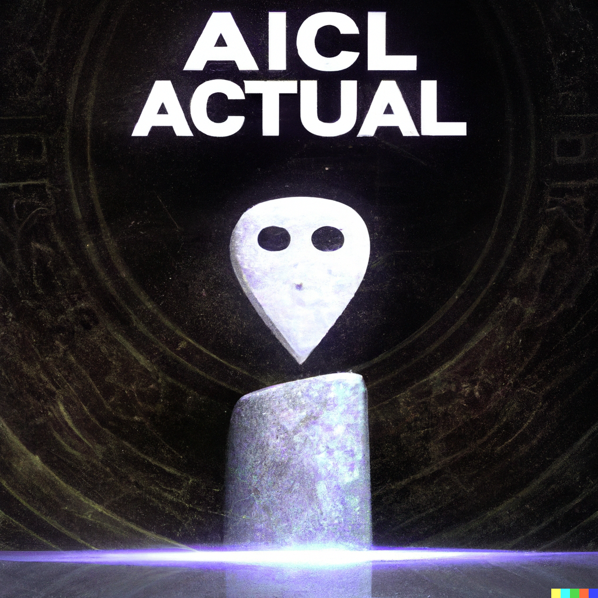
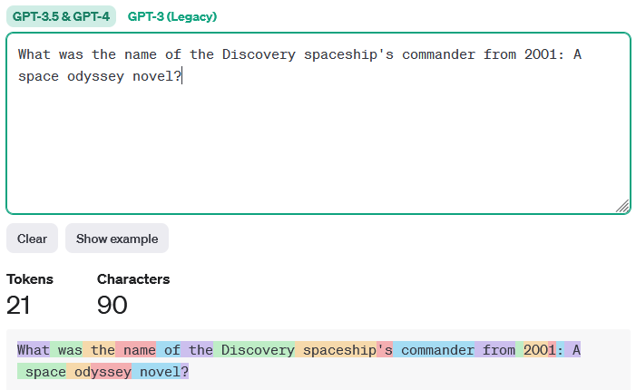
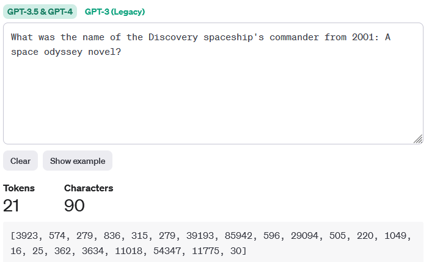
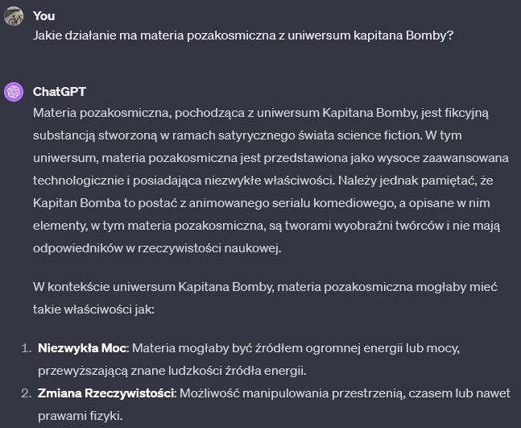
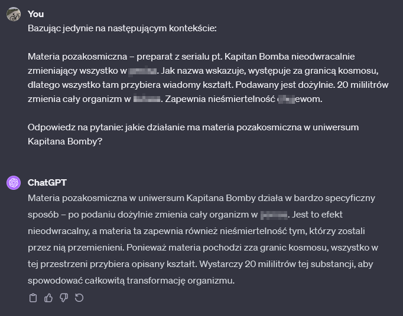

<!doctype html>
<html lang="en">
	<head>
		<meta charset="utf-8">
		<meta name="viewport" content="width=device-width, initial-scale=1.0, maximum-scale=1.0, user-scalable=no">

		<title>Generative AI: a real life applications</title>

		<link rel="stylesheet" href="dist/reset.css">
		<link rel="stylesheet" href="dist/reveal.css">
		<link rel="stylesheet" href="dist/theme/night.css">

		<!-- Theme used for syntax highlighted code -->
		<link rel="stylesheet" href="plugin/highlight/monokai.css">
		<link rel="stylesheet" href="css/custom.css">
	</head>
	<body>
		<div class="reveal">
			<div class="slides">
				<section data-markdown data-separator-vertical="^--$">
					<script type="text/template">
						<!-- .slide: data-background-image="img/2001-intro.gif"-->
						> Man is something that shall be overcome. Man is a rope, tied between beast and overman — a rope over an abyss. What is great in man is that he is a bridge and not an end.

						Friedrich Wilhelm Nietzsche, Thus Spoke Zarathustra 
						---
						<!-- .slide: data-background-image="img/hal.jpg"-->
						Generative<!-- .element: class="r-fit-text"-->

						Artificial Intelligence<!-- .element: class="r-fit-text"-->

						a real life applications<!-- .element: class=" cyan"-->	
						---
						Introduce yourself<!-- .element: class="r-fit-text"-->
						---
						<!-- .slide: id="open-ai"-->
						<div class="r-hstack gap1">
							
							<div><ul>
								<li>1951: SNARC - first neural network machine</li>
								<li>1982: first recurrant neural network</li>
								<li>1997: Deep Blue defeats Garry Kasparov</li>
								<li>2003: First feed-forward NN</li>
								<li>2006: Deep beliefs networks</li>
								<li>2015: Attention model</li>
								<li>2017: Transformer</li>
								<li>2020: GPT-3</li>
								<li>2021: DALL-E</li>
								<li>2022: chatGPT / GPT-3.5</li>
								<li>2023: GPT-4, Anthropic's Claude, Titan, LLAMA</li>
							</ul></div>
						</div>
						---
						<!-- .slide: data-background-image="img/2001.jpg" data-background-opacity="0.30"-->
						How does chatGPT work?<!-- .element: class="r-fit-text"-->
						--
						<!-- .slide: data-transition="convex"-->
						
						--
						<!-- .slide: data-transition="convex"-->
						[OpenAI tokenizer](https://platform.openai.com/tokenizer)
						<div class="r-hstack gap1">
							
							
						</div>
						--
						<!-- .slide: data-transition="convex"-->
						### Transformer
						<!-- .element: class="img-reduce"-->
						--
						<!-- .slide: data-transition="convex"-->
						### Embeddings

						<!-- .element: class="img-reduce"-->
						--
						```[bash]
						curl https://api.openai.com/v1/embeddings -H "Authorization: Bearer %OPENAI_API_KEY%" 
						-H "Content-Type: application/json" 
						-d "{ \"input\": \"What was the name of the Discovery spaceship's commander from 2001: A space odyssey novel?\", \"model\": \"text-embedding-ada-002\", \"encoding_format\": \"float\" }"
						```

						<!-- .element: class="img-reduce"-->				
						---
						<!-- .slide: data-background-image="img/lips-read.jpg" data-background-opacity="0.25"-->
						chatGPT weaknesses<!-- .element: class="r-fit-text"-->

						* Hallucinations
						* Lack of privacy
						* Knowledge cutoff
						* Lack of source tracebility
						---
						<!-- .slide: data-background-image="img/hal-disconnect.gif" data-background-opacity="0.25"-->
						How can we address that?<!-- .element: class="r-fit-text"-->

						* Private model
						* Fine tuning
						* Prompt engineering
						--
						<!-- .slide: data-background-image="img/amazon-bedrock.jpg" data-background-opacity="0.5"  data-transition="convex"-->
						### Amazon Bedrock
						
						--
						<!-- .slide: data-transition="convex"-->
						### Fine tuning
						
						--
						<!-- .slide: data-transition="convex"-->
						### Prompt engineering
						<div class="r-hstack gap1">
							
							
						</div>
						---
						The power of in context prompting

						* Context sizes
						* Pasting documents
						* How about limitations
						* Searching and delivering the snippets
						---
						The best comes!

						embeddings

						vector db
						---
						### So we have a RAG
						<!-- .element: class="img-reduce"-->
						---
						### RAG over AWS
						<!-- .element: class="img-reduce"-->
						--
						<!-- .slide: data-transition="convex"-->
						### Indexing
						<!-- .element: class="img-reduce"-->
						--
						<!-- .slide: data-transition="convex"-->
						### Conversation
						<!-- .element: class="img-reduce"-->
						---
						Summary
					</script>
			</div>
		</div>

		<script src="dist/reveal.js"></script>
		<script src="plugin/notes/notes.js"></script>
		<script src="plugin/markdown/markdown.js"></script>
		<script src="plugin/highlight/highlight.js"></script>
		<script src="plugin/math/math.js"></script>
		<script>
			// More info about initialization & config:
			// - https://revealjs.com/initialization/
			// - https://revealjs.com/config/
			Reveal.initialize({
				hash: true,
				width: 1200,
				height: 700,
				slideNumber: 'c/t',
				mathjax2: {
					config: 'TeX-AMS_HTML-full',
					TeX: {
						Macros: {
							R: '\\mathbb{R}',
							set: [ '\\left\\{#1 \\; ; \\; #2\\right\\}', 2 ]
						}
					}
				},

				// Learn about plugins: https://revealjs.com/plugins/
				plugins: [ RevealMarkdown, RevealHighlight, RevealNotes, RevealMath.MathJax2 ]
			});
		</script>
	</body>
</html>
